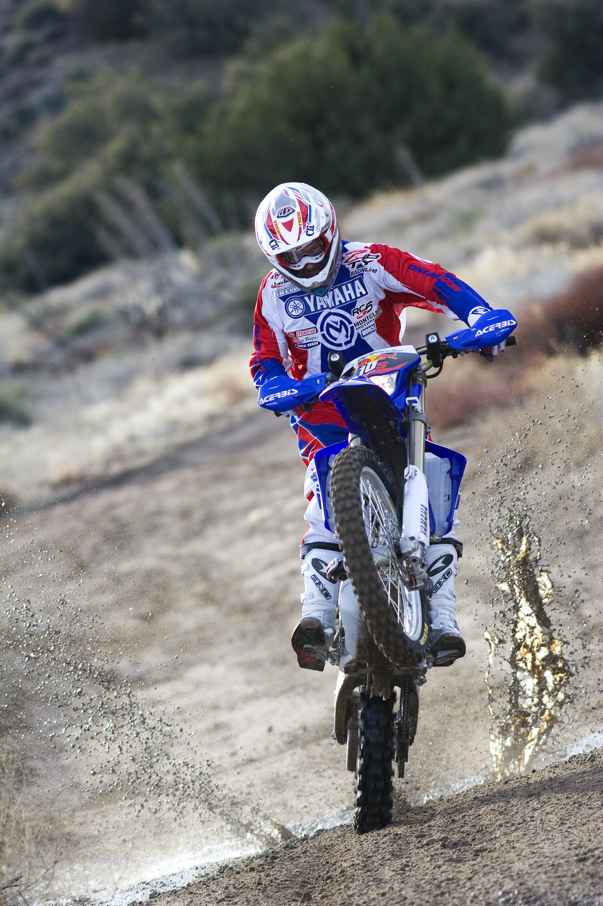
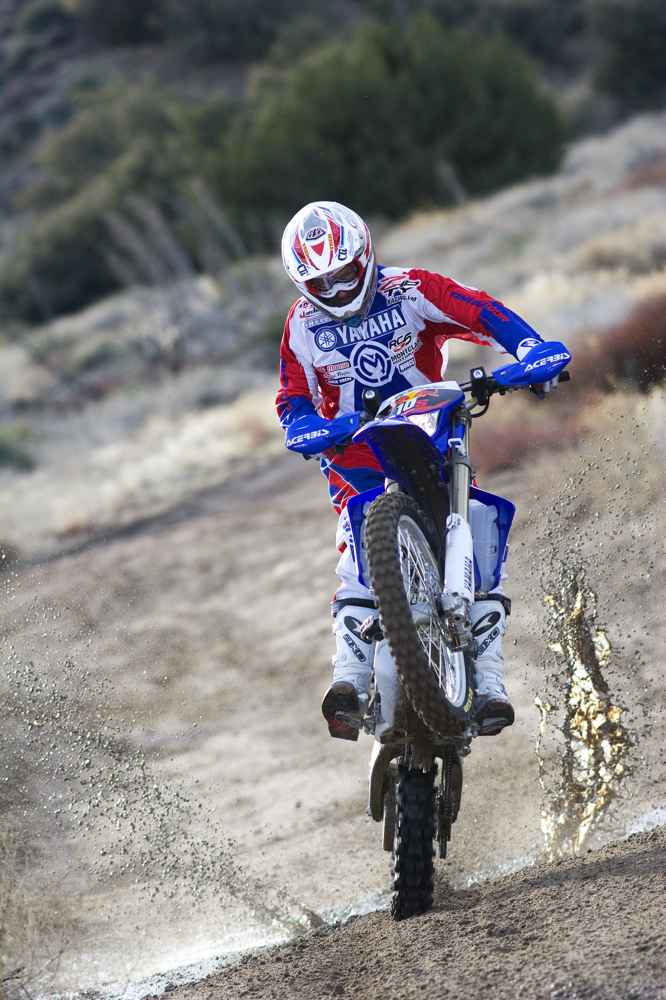

What is Sports Photography?
Sports photography is all about capturing the action, excitement, and drama of sports events. It can be a challenging genre of photography, as it often requires fast and accurate focusing, quick reflexes, and a good understanding of the sport you are shooting. But when done well, sports photography can produce some truly stunning and dynamic images.
 
